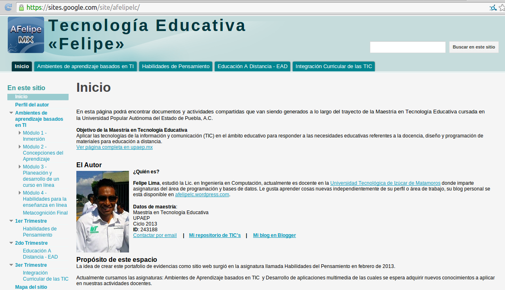

Portafolio electrónico
Portafolio como instrumento de evaluación.
Se trata de un instrumento de evaluación tanto formativa como sumativa, se centra en la reunión de los trabajos que el estudiante genera a lo largo de un curso o periodo, esta recopilación de entregables como ejercicios, escritos, investigaciones, reportes, organizadores gráficos, audio, video, dibujos, etc. se emplea para reunir evidencias acerca del progreso del aprendizaje del estudiante, regularmente los materiales a incluir son la selección de aquellos que son más significativos para el cumplimiento de los objetivos y las metas de aprendizaje; el portafolio puede generarse de forma física (una carpeta) o digital a través de un espacio en un equipo de cómputo o en Internet como una plataforma educativa, blog, repositorio, carpeta en la nube o empleando otra tecnología web.
La creación de un portafolio debe promover en los estudiantes el aprendizaje autoreflexivo, el análisis del progreso de su propio aprendizaje empleando el portafolio como instrumento de mejora a través de la revisión continua a lo largo del curso, además que al tratarse de un portafolio digital, el estudiante desarrolla las competencias entorno a las TIC.
Componentes del portafolio electrónico:
- Portada
- Institución
- Nombre o título del portafolio
- Profesor
- Datos del estudiante
- Fecha de entrega
- Índice
- Listado de actividades, su descripción y evaluación.
- Contenido
- Organización de los materiales que contiene el portafolio ordenados de acuerdo al índice.
Ejemplo de portafolio digital
El portafolio digital de Alfonso Felipe Lima Cortés como estudiante de la asignatura Ambientes de aprendizaje basados en TI está disponible en https://sites.google.com/site/afelipelc/
El portafolio cumple con las características al contener presentación, el índice de los contenidos y acceso a los mismos. Este recopila información y actividades desarrolladas en la asignatura, así como las reflexiones de cada módulo. Este espacio sirvió como medio de evaluación por parte del docente que promovió la creación de este espacio al que cualquier usuario tiene acceso a través de Internet.
